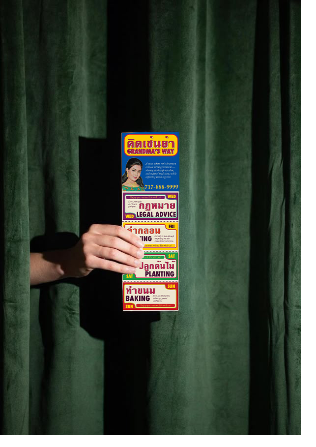
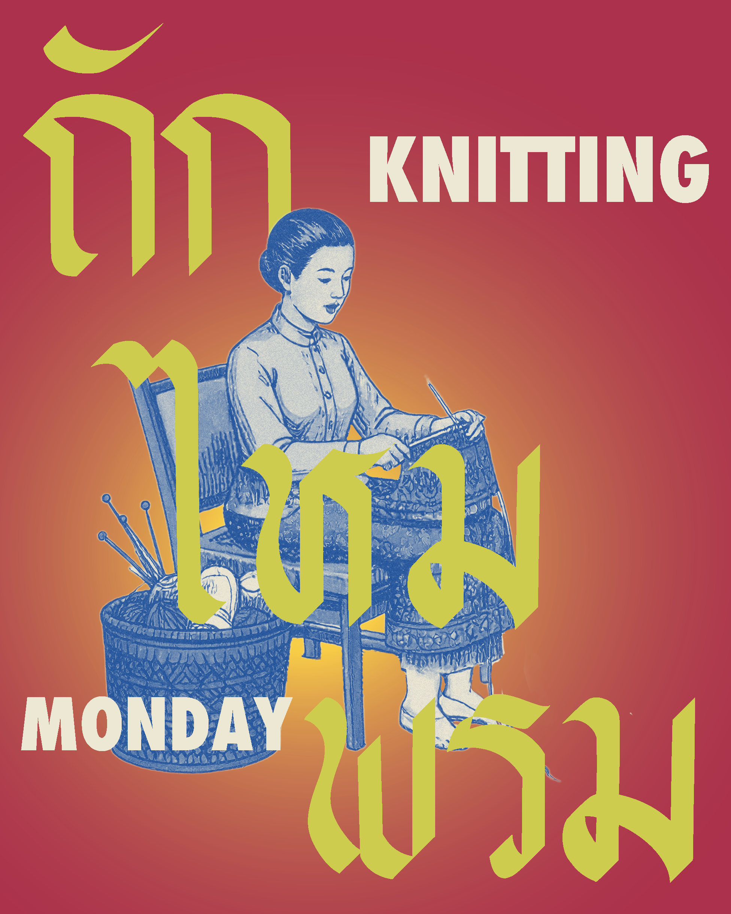

“Grandma's way” is a community campaign that invites retired women to step into a creative, caring space where their wisdom is celebrated and their voices matter. Through weekly activities like knitting, writing, baking Thai desserts, and even learning digital tools, this campaign bridges generations—connecting the past with the present. It’s not just about learning skills; it’s about sharing stories, staying curious, and building a supportive community where everyone, at any age, can grow together.
“คิด เช่น ย่า” คือแคมเปญที่เปิดพื้นที่สร้างสรรค์สำหรับผู้หญิงวัยเกษียณ ให้ได้มาแบ่งปันภูมิปัญญา เรียนรู้สิ่งใหม่ และเชื่อมโยงกับคนรุ่นหลัง ผ่านกิจกรรมรายสัปดาห์ เช่น ถักไหมพรม เขียนเรื่องราวส่วนตัว เรียนรู้เครื่องมือดิจิทัล ปลูกต้นไม้ และทำขนมไทยกับคุณย่า แคมเปญนี้ไม่เพียงแค่สอนทักษะใหม่ ๆ แต่ยังเป็นการสร้างสังคมที่อบอุ่น ให้ผู้หญิงทุกวัยได้เติบโตไปด้วยกัน พร้อมแบ่งปันเรื่องเล่าและความรู้จากชีวิตที่ผ่านมา
